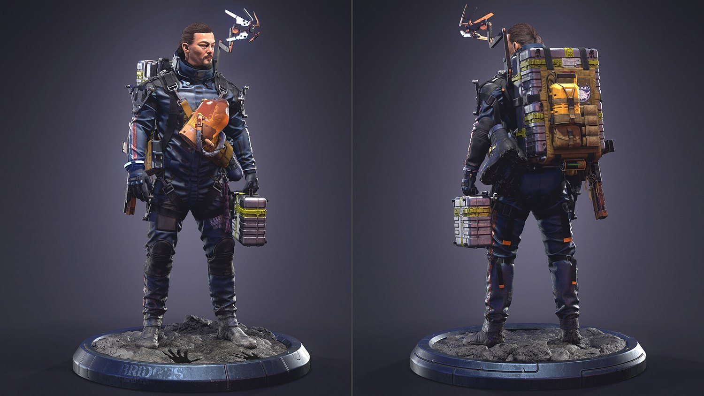
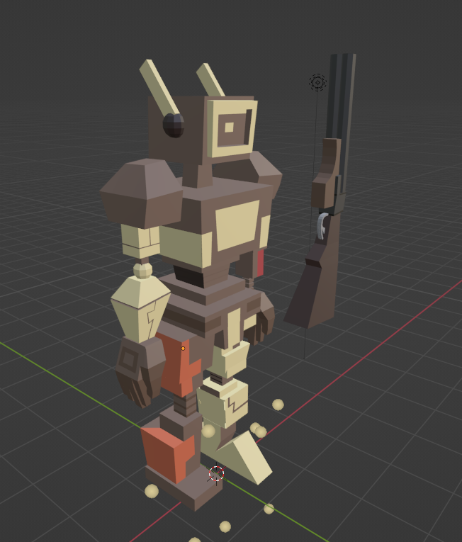

Back to main page | Back to previous page
3D Art, sometimes called CGI, 3D-CGI or three-dimensional computer graphics are graphics that use a three-dimensional representation of geometric data that is stored in the computer for the purposes of performing calculations and rendering digital images, usually 2D images but sometimes 3D images. The resulting images may be stored for animation or interactive videogames. 3D graphics stand in contrast to 2D computer graphics which typically use completely different methods and formats for creation and rendering. The objects in 3D art are often referred to as 3D models.
3D model © Death Stranding
I don't have much experience with 3D modeling, but I've done some low-poly (simplified) study works.
3D study work, 2019